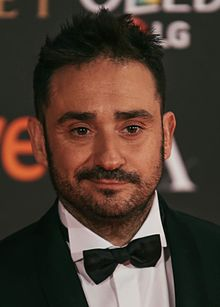

UN MONSTRUO VIENE A VERME
Datos Generales
Sinopsis: Connor (Lewis MacDougall) es un joven inglés de 13 años que, tras la separación de sus padres, se convierte en el hombre de la casa y el encargado de llevar las riendas del hogar. Con su joven madre (Felicity Jones) enferma, el pequeño intentará superar todos sus miedos y fobias con la ayuda de un monstruo (Liam Neeson). Fantasía, cuentos de hadas e historias imaginarias del pequeño se verán las caras no solo con la realidad, sino con su fría y calculadora abuela (Sigourney Weaver).
Estreno: La película se estrenó el 7 de octubre de 2016, a través de Focus Features. El primer fin de semana en taquilla recaudó 3,6 millones de euros y se convirtió en el mejor estreno español de 2016.
Cartel:
Director
Juan Antonio García Bayona, más conocido como J. A. Bayona, es un director de cine y productor español. Es autor de películas como El orfanato (2007), Lo imposible (2012). Inició su carrera dirigiendo anuncios de televisión y videoclips. En 2013 recibió el Premio Nacional de Cinematografía en el marco de la 61ª edición del Festival Internacional de San Sebastián.
Personajes
- Connor
- Conor es un niño que debe enfrentarse a la ausencia de su padre y las visitas a una abuela con la que no termina de congeniar como trasfondo a la enfermedad de una madre que sufre de cáncer.
- Actor: Lewis MacDougall: Es un actor británico. Hizo su debut cinematográfico en 2015, en la película de aventura y fantasía Pan, dirigida por Joe Wright.

- El monstruo
- Formado por hojas y ramas, pero de aspecto humano, el «Monstruo» es un ser bondadoso que trata de ayudar a las personas a través de métodos que, quizás, no resulten agradables en un primer momento. Sus fábulas puede que contengan apreciaciones morales discutibles, pero sus enseñanzas solo pueden llevarse a cabo cuando el sujeto ha entendido la esencia de la historia.
- Actor: voz interpretada por el grandisimo Liam Neeson: es un actor británico. La fama mundial le llegó con su interpretación de Oskar Schindler en la aclamada película La lista de Schindler (1993), dirigida por Steven Spielberg. Liam Neeson ha interpretado papeles protagonistas en numerosos filmes como Rob Roy (1995), Michael Collins (1996), la adaptación de la novela Los Miserables en 1998, Star Wars: Episodio I - La amenaza fantasma (1999), el drama biográfico Kinsey (2004) y Batman Begins (2005).

- La madre
- Aunque en la película ésta se llamaba Lizzie, en el libro es simplemente «Mamá», tal y como se refiere a ella Conor. Una mujer que, a pesar de adorar a su hijo, no puede evitar mentirle tanto a él (como a ella misma) acerca de la certeza de que va a morir en un futuro próximo.
- Actriz: Felicity Jones: es una actriz británica nominada a los Premios Globo de Oro, los Premios de Cine de la Academia Británica BAFTA, los Premios del Sindicato de Actores y los Premios Óscar en la categoría de Mejor Actriz por su interpretación de Jane Wilde Hawking en la película La teoría del todo (2014).
- El padre
- El padre de Conor se trasladó a América 6 años antes de los acontecimientos del libro con una nueva esposa. En el momento en que la madre de Conor yace enferma, su padre regresa a Inglaterra para visitarle durante unos días, aunque regresa pronto a América para asistir al nacimiento de su nuevo hijo.
- Actor: Toby Kebbell: es un actor británico, más conocido por su trabajo en las películas como Rocknrolla (pelicula de 2008), de Guy Ritchie donde interpreta a Johnny Quid, el músico y drogadicto hijastro de Lenny Cole, Prince of Persia: The Sands of Time, donde dio vida a Garsiv, y en The Sorcerer's Apprentice, donde interpretó a Drake Stone.

- La abuela
- Obsesionada con mantenerse joven durante toda la vida, la abuela de Conocer es una agente de policía que sigue tiñéndose los cabellos para que no aparezcan las canas. Presumida y egocéntrica, no termina de encajar con su nieto, especialmente porque carece de la empatía necesaria para comprender a cualquier otra persona que no sea ella misma.
- Actriz: Sigourney Weaver: es una actriz y productora estadounidense de cine, televisión y teatro. Ha sido candidata a los Premios Óscar y a los Premios del Sindicato de Actores.2 Ha sido ganadora de dos Globo de Oro en las categorías de mejor actriz en drama y mejor actriz de reparto, y de un BAFTA a la mejor actriz de reparto.

Plataformas
| DISPONIBILIDAD | |
|---|---|
| Plataformas | Precio |
| Netflix | Disponible con la subscripción |
| Disney + | Disponible con la subscripción |
| Apple TV | 5.99€ |
| Amazon Prime | 3.99€ |
| Youtube | Desde 8.99€ |
| Google Play Peliculas | Desde 8.99€ |
| VALORACIONES | |
| IMDb | 7.5/10 |
| FilmAffinity | 6.6/10 |
| SensaCine | 4/5 |
Media